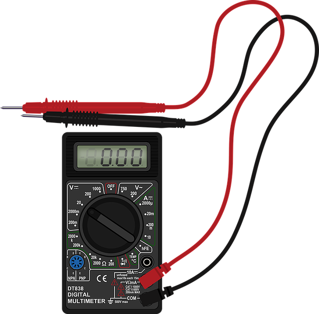
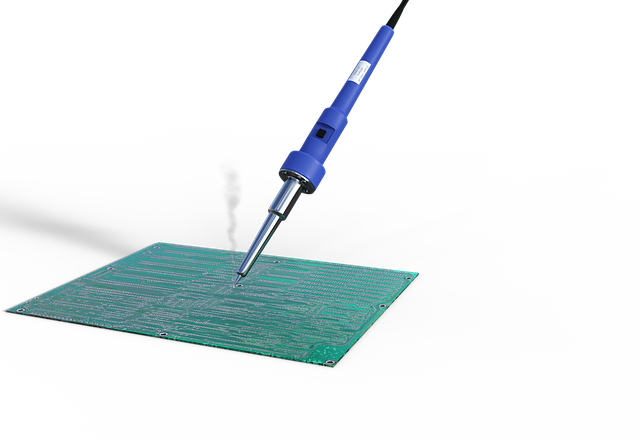
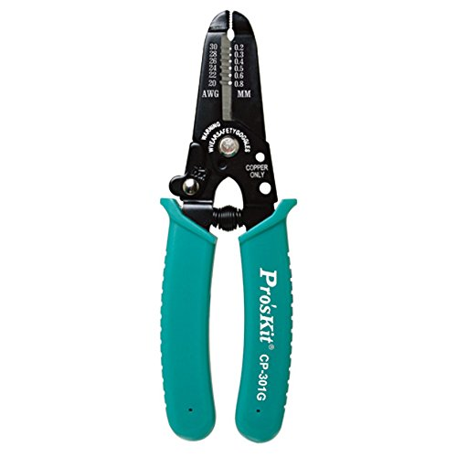
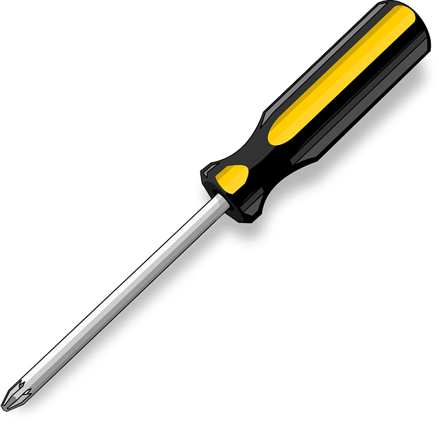
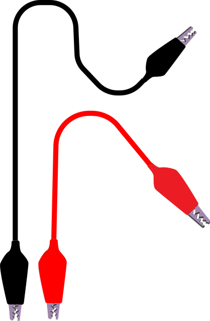
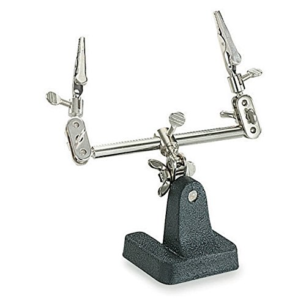

Robotic Arts Intro Fall 2017 (IA277.01)
- Instructor: Lucas Haroldsen (lharoldsen@mica.edu)
- Class Site: yasunaga.work/raif17
- syllabus: syllabus.pdf
- Resources: links.html
Suppliers
Arduino
- Arduino.cc
Arduino official website. - Amazon
prime is free for 6 months for students - Adafruit
Close in NYC, generally fast shipping - Sparkfun
shipping can be slow
Electonics
- Digi-Key Electronics
Electronic supermarket. We will go over how to use it in the class - MOUSER Electronics
Another Electronic supermarket (shipping tends to be slower) - All Electronics
You can find some cheap things - American Science and Surplus
Great store for cheap surplus electronics. They will give you very nice hand drawn catalogue
Tutorials
- Arduino Foundations
Extended guide for learning arduino - Adafruit Arduino Lessons
Well documented 17 parts tutorials - Sparkfun
How to use multimeter and Suggested Reading - ITP Physical Computing
Step by step tutorials of basic electronics and arduino under the tab "topics" - talkingelectronics.com
hardcore transistor circuits - Nicolas Collins
Tutorials from book "Handmade Electronic Music"
Tools -- softwares and texts
- Tinkercad
Circuit making and sumilation software from Autodesk. You can simulate Arduino code - Fritzing
Another Circuit prototyping and PCB software - Arduino Reference Page
Arduino Language reference for details and examples - falstad
online electronic circuit simulator - Forrest Mims, III
Text : Getting Started in Electronics - Forrest Mims, III
Volume III: Electronic Sensor Circuits & Projects
Tools -- you might want to invest near future
Multimeter
This is on the top of the list of tools you might want. It’s an measuring/testing device that will help you troubleshoot. Very important. You will say thank you to multimeter. Price veries, you might get something like This to start.
Soldering Iron
 We have soldering stations in our department for you to use so you don’t have to get one, but if you have to have one don’t get a cheap one. Weller makes reliable and economical ones like This
Wire Strippers
A tool designed to strip the wires, very useful.This
Screw Drivers
A pair (+ and -) of small screw drivers will come in handy
Aligator Clips
It will make your experiment speed up, but make sure it is soldered on good!
Third Hand
Your friend who holds your wires and components for you while you solder This